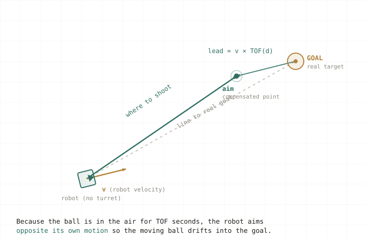

FRC Team 5829 · 2026 season · Java
Shoot-on-the-Move
A velocity-compensated targeting system that lets our turretless robot score over 90% of shots while driving, instead of stopping to line up each one.
The problem
In the 2026 FRC game, our robot scores by launching foam balls into a funnel-shaped goal. Shooting while stationary is the baseline. The hard version is shooting while moving toward the next objective, which saves a cycle of stopping, squaring up, and re-accelerating every time. It is harder for us specifically because our robot has no turret: the whole chassis has to point the shot, so the aiming math and the driving are coupled.
The idea
The ball spends real time in the air. During that flight time, the robot keeps moving, so the ball inherits the robot's velocity. If I aim straight at the goal while driving, the shot drifts off by exactly velocity times flight time. So instead of aiming at the goal, I aim at a compensated point offset from the goal in the direction opposite the robot's motion. The moving ball then curves back into the real goal.

v × TOF, opposite the direction of travel.Measuring the real world
Two quantities depend on distance: how fast to spin the flywheel (RPM) and how long the ball stays in the air (time of flight). Rather than derive these from theory and fight every real-world variable, I measured them. I recorded shots at known distances, timed the flight with my phone, and built two interpolating lookup tables from the data, which act like an accessible linear regression between the points I sampled.
public final static InterpolatingDoubleTreeMap TOF = new InterpolatingDoubleTreeMap();
static {
for (var e : List.of(
Pair.of(Meters.of(2), Seconds.of(0.85)),
Pair.of(Meters.of(4), Seconds.of(1.13)),
Pair.of(Meters.of(6), Seconds.of(1.49)),
Pair.of(Meters.of(8), Seconds.of(1.85)),
Pair.of(Meters.of(10), Seconds.of(2.21)),
Pair.of(Meters.of(12), Seconds.of(2.57))))
{ TOF.put(e.getFirst().in(Meters), e.getSecond().in(Seconds)); }
}The iterative solver
Here is the catch that makes this interesting. The lead depends on the flight time, the flight time depends on the distance to the target, but the target is the compensated point I am trying to find. The unknown is on both sides. I solve it by fixed-point iteration: start by aiming at the real goal, compute the flight time for that distance, move the aim point, and repeat. It converges in two or three passes.
/** Virtual goal that compensates for robot velocity, so the
* robot aims ahead of the real goal while moving. */
public Pose2d getDynamicHubLocation() {
Translation2d hub = Constants.getHubPose2D().getTranslation();
Translation2d vel = getFieldVelocity(); // robot velocity
Translation2d aim = hub;
for (int i = 0; i < 15; i++) { // converges in ~2–3
double dist = aim.minus(robotPos).getNorm();
double tof = Constants.TOF.get(dist); // measured lookup
aim = hub.minus(vel.times(tof)); // lead the goal
}
return new Pose2d(aim, new Rotation2d());
}
The robot then aims at aim instead of hub, and both the flywheel RPM and the
flight time are read from the same compensated distance so the model stays internally consistent. This
works whether the robot is moving toward, away from, or sideways to the goal.
Seeing it work
Two test runs, one at Katy and one at Awty:
What still breaks, and what's next
The system is not perfect, and the way it fails is the interesting part. Misses cluster around sudden changes in direction. That is not a flaw in the solver. It comes from an assumption baked into the model: that the robot's velocity is constant over the ball's whole flight. When the robot accelerates or reverses mid-flight, the ball already left the shooter carrying the old velocity, and no aiming math can recover a shot that is already in the air.
So the fix is not "solve harder." Switching to Newton's method will converge faster and more cleanly than fixed-point iteration, but the real gains are in modeling the acceleration and accounting for the command latency between deciding to shoot and the ball actually leaving.
I'm currently working through the FRC documentation's writeup on Newton's method for dynamic shooting and testing whether a short latency-compensation term meaningfully cuts the misses on direction changes.
What I took from it
This started as a classroom idea, that horizontal and vertical motion are independent, and turned into a system that runs on a real robot in real matches. The most useful lesson was learning to tell a convergence problem apart from a modeling problem, because they have completely different fixes.